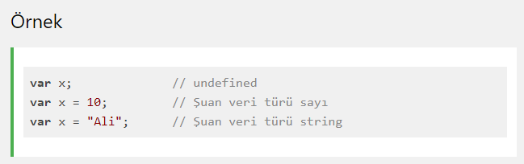
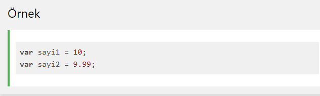
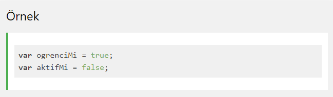
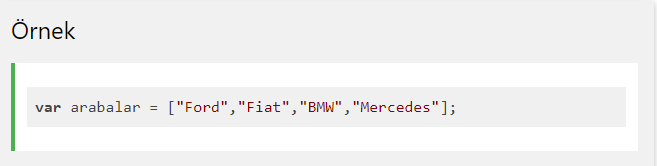

İnsanlardan farklı olarak bilgisayarlar, 1234 ve abcd arasındaki farkı anlayamazlar. Yani hangisi sayı, hangisi metin bunu ayırt edemezler.
Veri türü, değişkenler içinde saklanacak verinin türüne göre sınıflandırılmasıdır. Veri türleri her programla dili için oldukça önemli bir kavramdır.
Bir uygulama geliştirirken değişken içinde saklanan verinin türünü önceden belirtiriz. Böylece bilgisayar verinin saklanacağı bellek alanını buna göre ayırır.
•JavaScript değişkenleri çok farklı veri türlerini tutabilir. JavaScript programlama dilinde başlıca veri türleri sayı (number), metin(string) ve nesne (object) türleridir.
var agirlik = 25; // sayı
var websitesi = "https://www.w3schools.com/"; // string
var kisi = {ad: "ali", soyad:"veli"}; // nesne
var agirlik = 25; // sayı
Veri türü programlamada önemli bir kavramdır. Sadece JavaScript'e özel bir ifade değildir.
Bir değişken üzerinde işlem yaparken onun veri türünü bilmemiz gerekir.
Veri türleri olmadan aşağıdaki gibi işlemleri bilgisayar çözemez:
var sonuc = 20 + "araba";
Yukarıdaki işlem hata vermez fakat bir toplama işlemi gerçekleşmez, string birleştirme işlemi gerçekleşir ve sonuç şu şekilde görüntülenir: 20araba
****************************
Fakat aşağıdaki işlem, yukarıdaki işleme göre daha farklıdır:
var sonuc = "20"+ "araba";
Bunun sebebi 20 sayısı "20" şeklinde tırnak içinde yazıldığında bilgisayar bunu artık string olarak kabul eder.
JavaScript dinamik türlerere sahiptir. Bunun anlamı, Aynı JavaScript değişkeni farklı veri türlerini tutabilir.
JavaScript programlama dilinde sadece tek tür sayı vardır.
Bir değişkene sayılsal değer atanıyorsa bu değer tırnak içinde yazılmaz.
Sayılarda ondalık bölüm nokta ile yazılır:
Boolean veri türü sadece iki değer alır: true (doğru) ve false (yanlış)
Boolean veri türü genelde koşul ifadelerinde kullanılır.
Eğer elinizde birbiriyle ilişkili bir grup veri varsa bu verileri Array adı verilen yapılarda saklarız.
JavaScript dizi yapıları köşeli parantez ile oluşturulur. Dizinin elemanları virgül ile ayrılır.
Aşağıdaki örnek arabalar adında bir dizi oluşturur. Bu dizi 4 elemana sahiptir.
